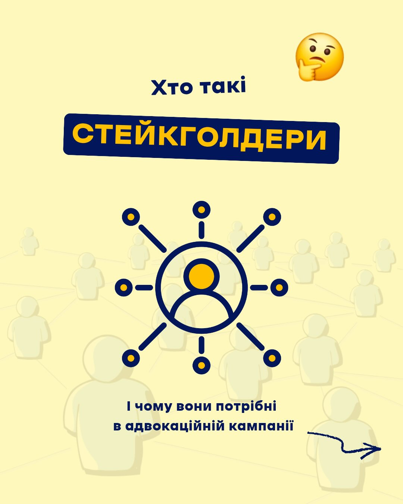
Освітній контент
Пояснюємо складні теми простою, дуже впізнаваною візуальною мовою.
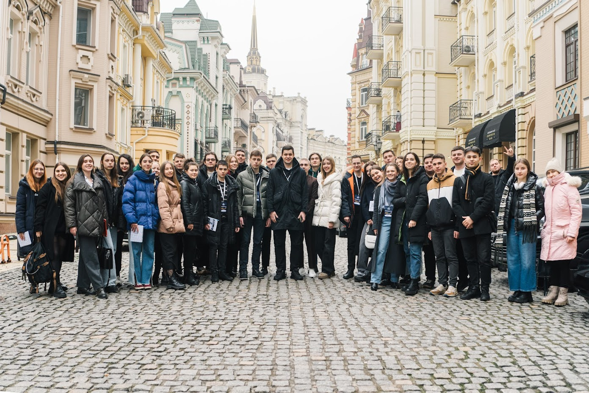
Візуальний стиль

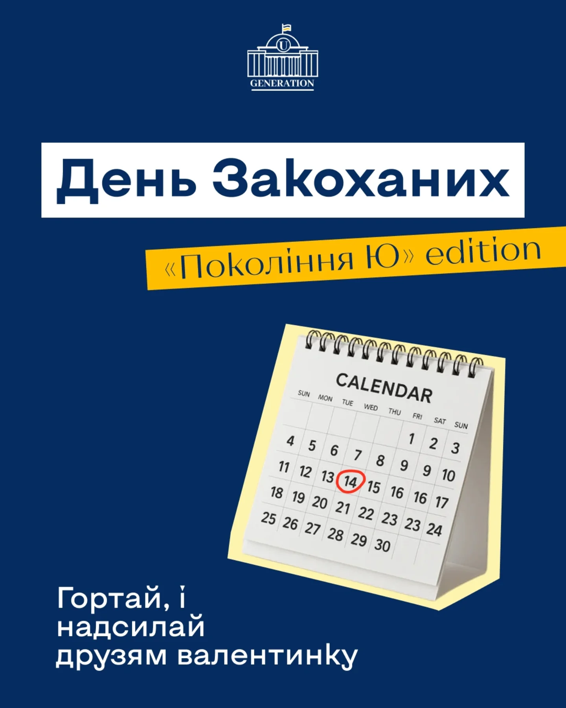
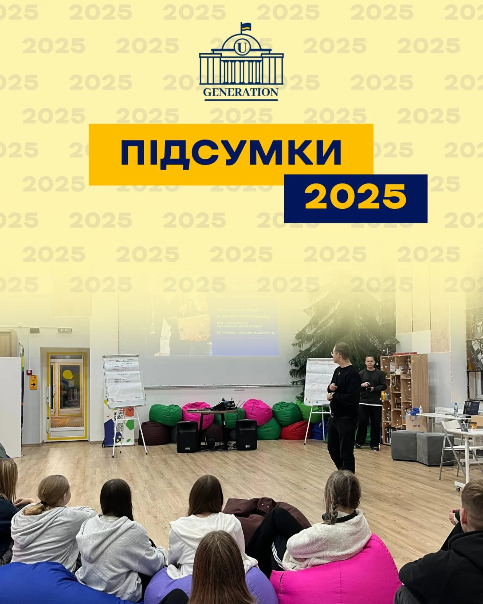
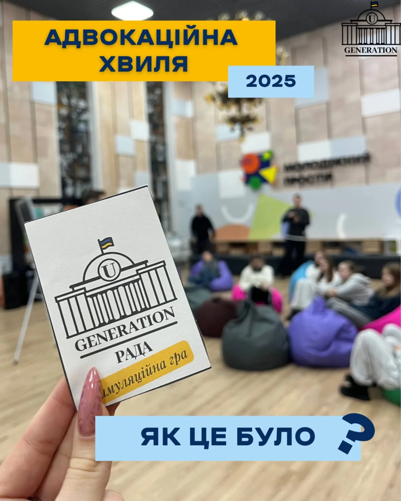
Про нас
Наша мета — допомогти молодим людям зрозуміти, як працює держава, і дати їм інструменти для впливу: від першого тренінгу до власної адвокаційної кампанії.
Освітні заходи, менторство та підтримка в реалізації ідей створюють простір, у якому молодь не просто вчиться, а отримує досвід реальних змін.
Надаємо знання та інструменти, щоб молодь впливала на рішення у своїх громадах.
Підтримуємо ініціативи консультаціями, юридичною допомогою та експертною співпрацею.
Використовуємо інтерактивні формати, симуляції та нові підходи до громадянської освіти.
Об'єднуємо людей різних поглядів, поважаючи цінності кожного учасника спільноти.
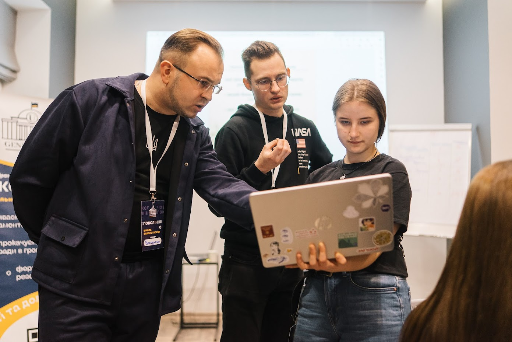
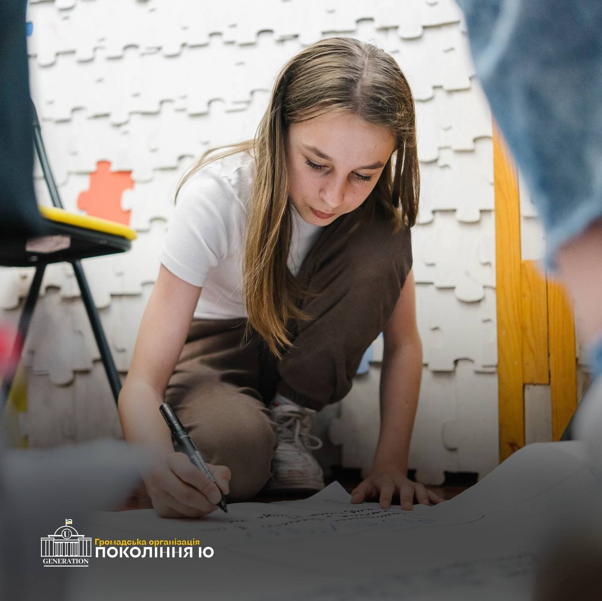
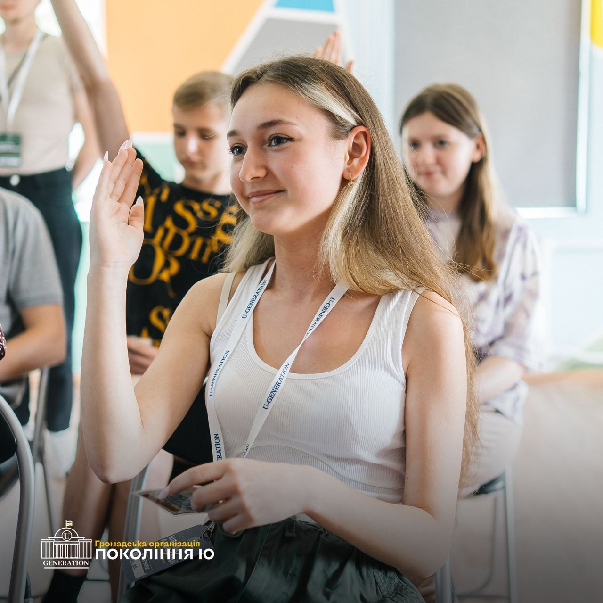
Можливості для тебе
Теоретичний блок, симуляційні формати та розбір інструментів участі, які можна застосувати у своїй громаді.
Допомагаємо оцінити потреби молоді, сформувати план дій і підготувати комунікаційну стратегію.
Посилюй свій голос у політиці через практику, фасилітацію подій та командну роботу в проєктах.
Наші послуги
Короткий практичний формат про інструменти участі та базові принципи адвокації.
Підготовка плану кампанії, робота з петиціями та комунікаційними стратегіями.
Поглиблений формат з симуляційною грою, практикою та структурою запуску кампанії.
Наші програми
Посилюємо вплив молоді в громадах через тренінги, менторство та спільні заходи з представниками влади.
Формуємо кадровий резерв для держави через розуміння парламенту, законотворчого процесу та практики діалогу з депутатами.
Створюємо мережу тренерів і координаторів у громадах, щоб посилювати місцеві осередки та масштабувати вплив.
Наші результати
Кілька прикладів реальних змін, які впроваджували учасники програм.
Фінансова прозорість
Основні надходження в експорті сторінки позначені як підтримка від ІСАР Єднання та Crown Agents.
У структурі витрат пріоритет мали проєктна діяльність та оплата праці, а ключовим донором був Crown Agents.
Партнери
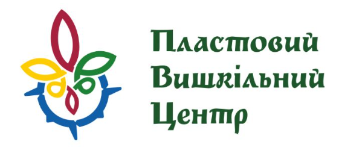
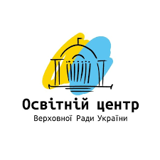
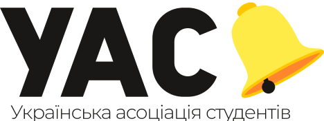
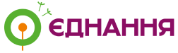
Контакти
Напишіть нам, якщо хочете провести освітню подію, подати громаду або обговорити формат співпраці для молодіжної команди, школи чи організації.